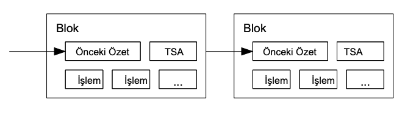

4. İş Kanıtı
Eşler arası temelde dağıtılmış bir zaman damgası sunucusunu
uygulamak için, gazete veya Usenet yayınlarından ziyade, Adam
Back'in geliştirdiği Hashcash [6] benzeri bir iş kanıtı sistemi
kullanmamız gerekecektir. İş kanıtı, -örneğin SHA-256 ile- özetleme
işlemi sonucunda çıkan özetin başında belirli sayıda 0 bit olan bir
değerin taranmasını içermektedir. Yapılması gereken ortalama iş,
bulunması gerekli 0 bitlerin sayısı ile üssel olarak orantılıdır ve
tek bir özet hesabı ile doğrulanabilmektedir.
Zaman damgası ağımızdaki iş kanıtı modelini, blok özetindeki gerekli
sıfır değerli bitleri veren bir değer bulunana kadar, bloğun tek
seferlik anahtarını arttırarak uygulamaktayız. İşlemci gücü bir kez
iş kanıtını yerine getirmek için harcandığında, blok aynı iş
tekrarlanmadan değiştirilememektedir. Sonraki bloklar zincire
eklendikçe, bloğu değiştirmek için gereken iş kendisinden sonra
zincire eklenen bütün blokları değiştirmeyi de kapsayacaktır.

5. Ağ
Ağı çalıştırmak için gerekli adımlar şöyledir:
- 1) Yeni işlemler tüm düğümlere yayınlanır.
- 2) Her düğüm yeni işlemleri bir blok içinde toplar.
- 3) Her düğüm kendi bloğu için zor bir iş kanıtı üzerinde çalışır.
3